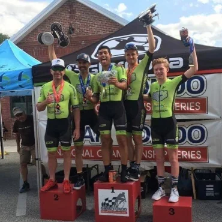
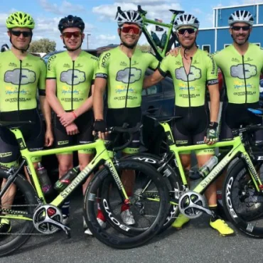
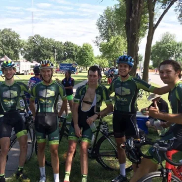
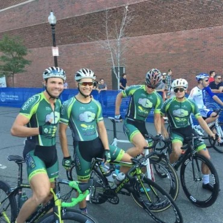
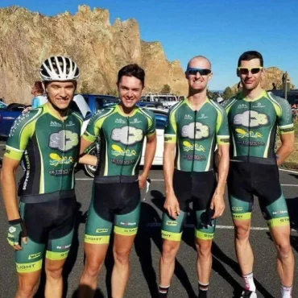

SCS - Support Clean Sport - Team Background – Guttenplan Coaching Cycling Team
Team Background – Guttenplan Coaching Cycling Team
Founded in 2012 by David Guttenplan, the Guttenplan Coaching Cycling team has evolved into a National renowned team. The current Support Clean Sport – SeaSucker – Guttenplan Coaching Cycling Team came to fruition with the idea of defying the boundaries set by themselves and others. In our third year we amassed over 30 wins and 70 podiums with the majority taking place within the Southeast, a number that not only exceeded our own expectations but also our supporters. Many riders have developed through this program and went on to sign professional contracts because of the support and direction the team made possible to them.
Support Clean Sport
The Support Clean Sport – SeaSucker – Guttenplan Coaching Cycling Team partnered with SUPPORT CLEAN SPORT and BANNED SUBSTANCES SUPPORT GROUP in an effort to not only affect the cycling community on the bike but off the bike. SUPPORT CLEAN SPORT is an initiative of the 501(c)(3) public charity Anti-Doping Research. The goal is to create an environment where athletes, coaches, health and nutrition experts, drug testing professionals and valued sponsors can come together to celebrate and enable clean sport. Support Clean Sport Cycling is an affiliate club that any one can join to show their support of clean cycling, regardless of what team or primary riding club they might be a part of or if they are not affiliated with any team or club.
Riders
-
 David Guttenplan:
David has lead the team to countless national podiums and wins. After a tragic accident between him and a vehicle last year, he has been working extremely hard (and of course staying clean) to have the best year ever in 2017. David is the team Director, Coach, and Owner of Guttenplan Coaching LLC. He began racing bikes in 2001 and since 2003 he has competed at a professional level nationally and internationally. His coaching abilities are known across the nation, and hiss cycling abilities have made him a distinguished rider. David has had countless national podiums such as 4th overall in the 2014 USACrits Series and was 6th overall 2014 in the National Criterium Calendar. David finished the 2016 season with over twelve wins and twenty-eight podiums, David is ready to lead the team to success and raise the bar for US cycling in 2017.
Steven Perezluha:
Steven is a cyclist who has achieved much more in this sport than many aspire in a lifetime. He set himself out to conquer cycling from Orlando to Alaska in 2009. Soon after, he raced in Race Across America and rode over 3,500 miles in less than ten days, finishing 8th overall. He began his focus as a professional cyclist in 2013 and he has already podiumed at National Events. Steven hopes to continue riding at a national and international level in years to come.
Corey Davis:
Corey is from Danville, Virginia and proves to be a strong road racer. Corey is looking to make a big jump in the 2017 national and international level events. He made some top ten’s and lapped the field at a few Pro Road Tour’s last year, which helped the team during all the stage races. Corey has been delivering at almost every single race during the past three years. He turned down offers to go professional to stay on the Guttenplan Racing roster and take on the national races with the team.
-
 Scottie Weiss:
Scottie is a very successful former pro and national champion. He is the current Everesting World Record Holder. He is also an incredible graphic designer for the Guttenplan Racing clothing sponsor, Starlight Custom Apparel. World Masters 2016 Road Champion, former longtime pro, and elite national champ, we are honored to have him race with our team.
Mike Stoop:
Michael is a former professional cyclist. He also happens to be a past teammate with David Guttenplan. There is nothing Stoop can’t do. Whether it’s a time trial, climb, or a sprint, he is an all-around amazing athlete that will be a top contender in any race he cycles in. Returning from winning 2nd at the 2016 Wilmington Grand Prix Pro Road Tour for our team and previously placed 3rd in the 2015 Wilmington Grand Prix, 2017 looks bright for Michael.
David Pavlic:
David is a young, up and coming rider. He is a 2012 state road race champion and is looking forward to his second full year as a Guinness Pro 12 racer. Plan on seeing some solid results from David in both Pro 12 and collegiate races!
-
 Stefano Barberi:
A few of Stefano’s notable wins are as follows: Won the 2015 Northstar Cannon Falls Stage 3. Has received multiple Northstar “Most Agressive Rider” Jersey’s. Placed 4th at the 2015 Elite Nationals Road Race. Took 1st at the 2014 Killington Stage Race GC. Won 1st place during the 2014 California District/State Championships.
Shane Braley:
Raced professionally in Europe three years ago. He also ran the Dom360 Elite Team. Shane brings a wealth of Tactical Racing knowledge to the Guttenplan Racing team.
Chris Tricoli:
Great up and coming racer in Orlando who helps out tremendously with the team on and off the bike.
Jimmy Schurman:
Professional with Lupus Pro Cycling team.
-
 Coulton Hartrich:
Coulton won the Northstar Grand Prix “Best Amateur” jersey twice and was 10th overall and 6th overall, respectively. He was 6th overall in the 2016 UCI 2.2 8 stage Vuelta Independencia Dominican Republic. He also won 8th overall at San Dimas Stage Race in 2016 and previously took 2nd overall 2014 San Dimas Stage Race.
Johnathan Freter:
Johnathan is a third-year professional. He is also an incredibly talented climber and workhorse. He finished 3rd at the Glencoe Grand Prix NCC in 2013.
Marcos Lazzarotto:
Fresh off his second-year racing professionally with Lupus. Marcos is looking to improve in 2017!
Hunter Smith:
National Team Junior member, Hunter has podiums in multiple national level junior races. He is learning from our team at the Pro1 level. Last year, he went for the Paris Roubaix Junior race in Europe.
-
 Richard Keller:
Richard has years of experience with cycling. He is looking to hit the Masters Worlds all while supporting the Guttenplan Racing team in the process.
Ben Foster:
Cat 1 stage racer from California had his comeback year after breaking his leg in the 2015 season.
Jake Silverberg:
Jake joined the team starting at Redlands after racing in Europe with a small professional team in 2015.
Quinten Kirby:
Quinten is guest riding for Tulsa, Northstar, Cascade.
Austin Arguela:
Austin is guest riding for Northstar, Cascade.